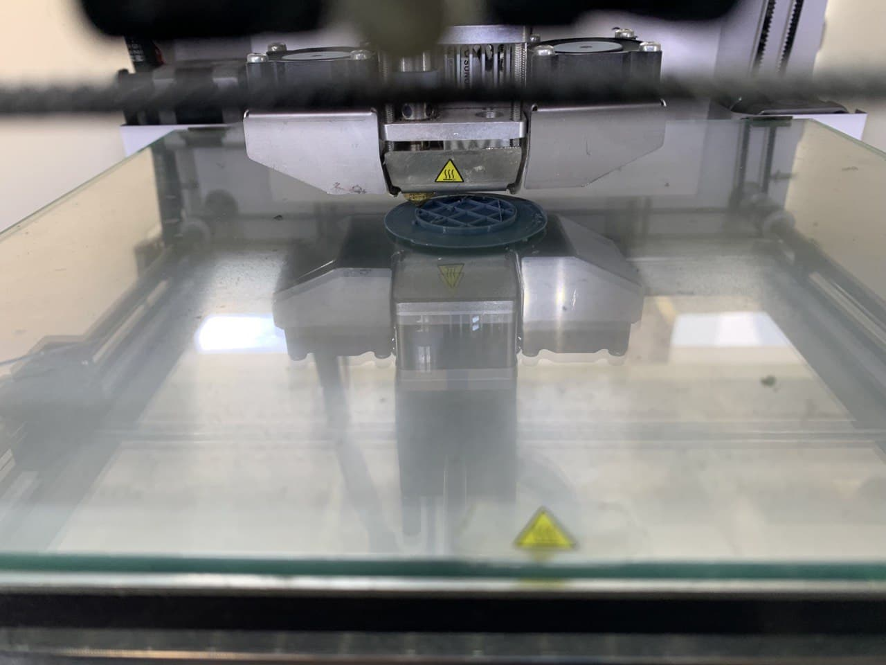
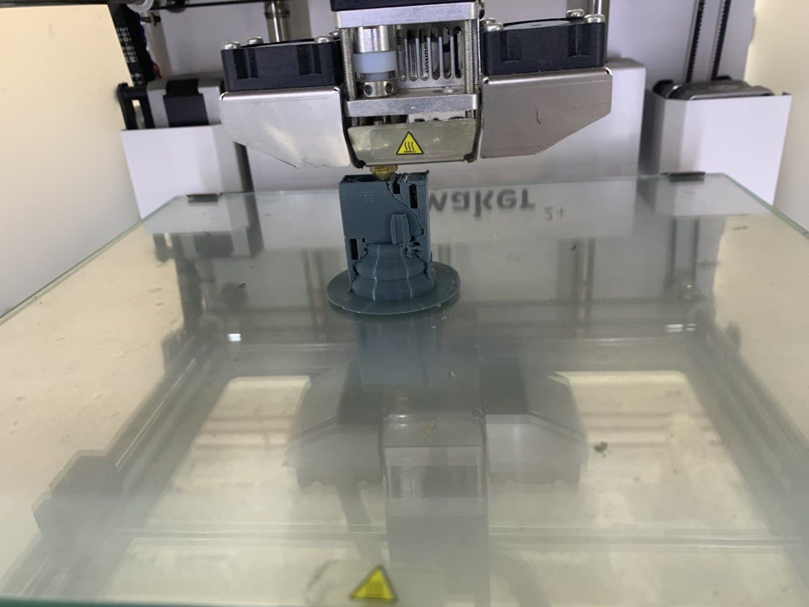
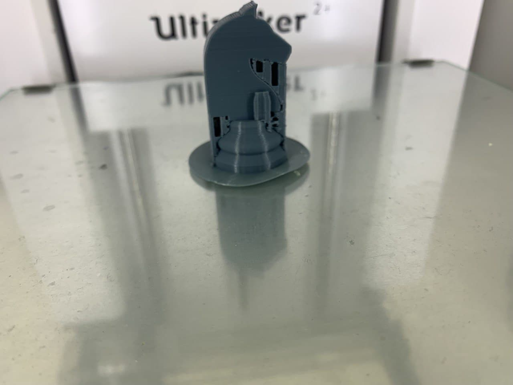
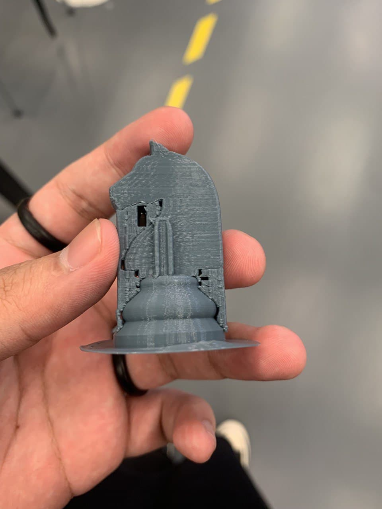

Chess Piece
-Image 1
-Image 2
When 3D printing an object it is important to check and ensure the base of the object is printed properly with no errors before walking away to allow the printer to print.(Can be seen in the first image)
Only then you can allow the printer to continue to print, but do come back to check on the object to ensure everything is in order and there is no problem in the printing(Can be seen in the second image)
-Image 3
-Image 4
When an object is finish printed allow the object to rest and cool down as it can still be fragile or soft. The third image shows an example as to what will happen when you try to remove the object once it is done printing, the base is still soft hence it bends when you try to remove it.
The last image shows the finish printed object, the supports and base then have to be removed or cut to see the proper object.